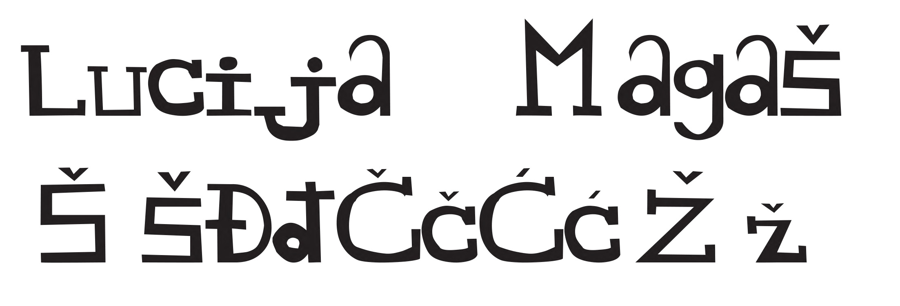
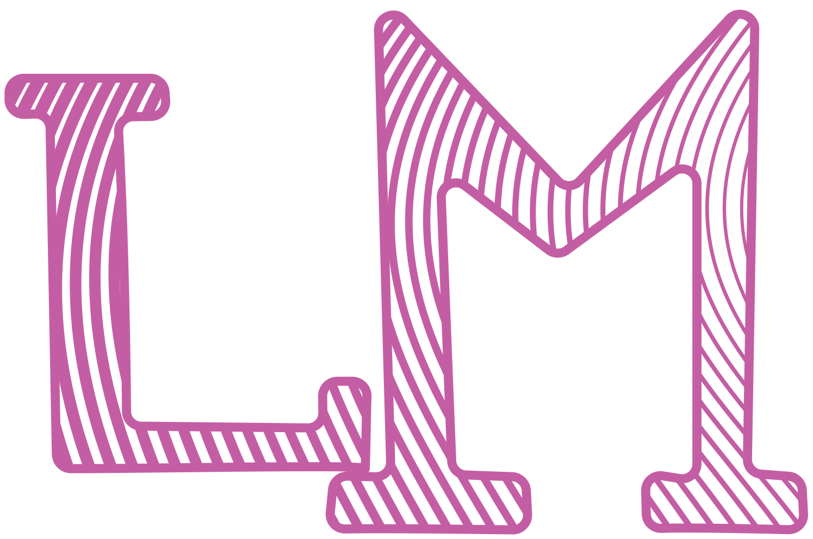
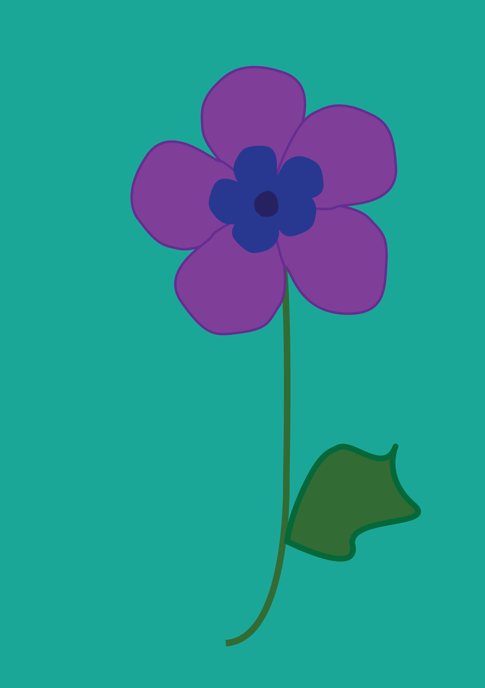
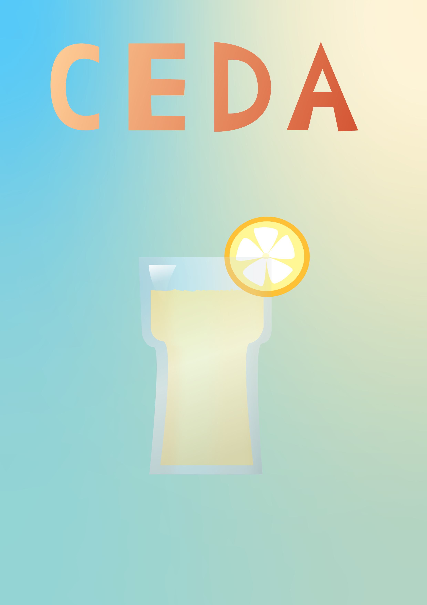
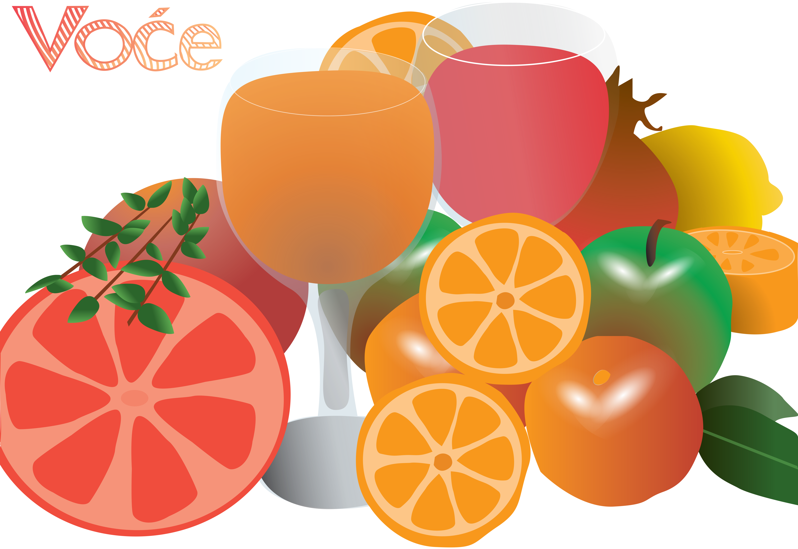
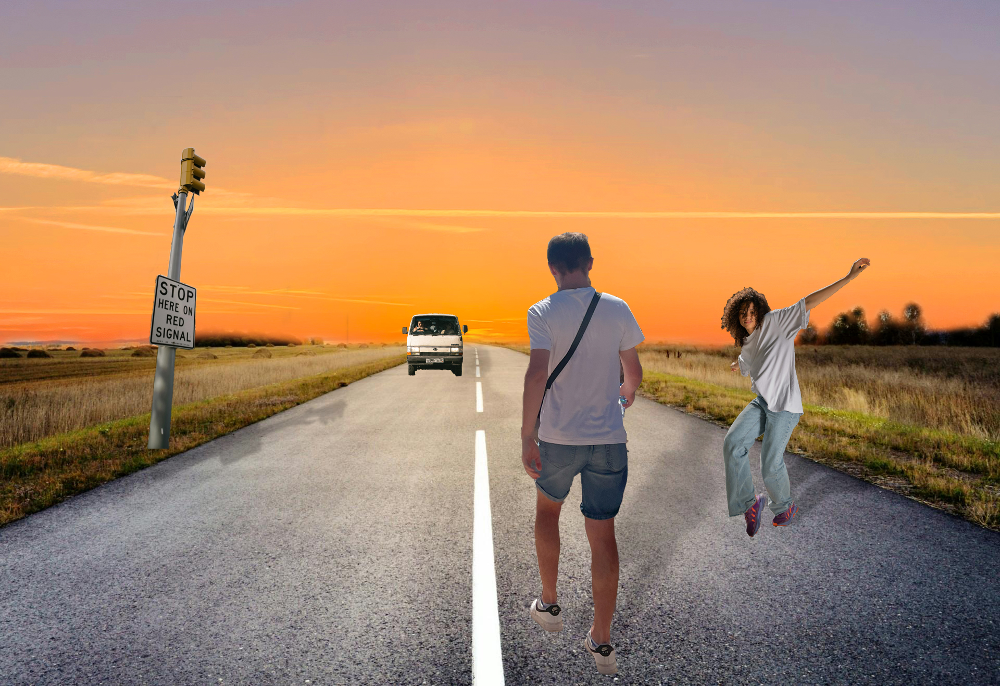
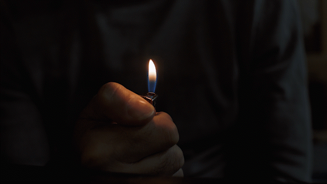

HOME
O MENI
VIDEO
Moje vježbe
1. vježba - font

2. vježba - Bezierova krivulja, precizno crtanje

3. vježba - boja, transformacije

4. vježba - gradijenti, transparencija

Projektni zadatak - vektorska grafika

5. vježba - retuširanje
6. vježba - koloriranje
7. vježba - fotomontaža

Projektni zadatak 2 - piksel grafika
Vježba 8 - cinemagraf
